第七章：前向方差模型
本笔记基于 Bergomi《Stochastic Volatility Modeling》第七章，按原书行文结构整理，兼顾数学推导的完整逻辑与交易实务视角。本章是全书篇幅最长、内容最丰富的核心章节。
目录
- 定价方程的推导（§7.1）
- 马尔可夫表示（§7.2）
- N 因子模型（§7.3）
- 双因子模型（§7.4）
- 校准——香草微笑（§7.5）
- 方差实现期权（§7.6）
- VIX 期货与期权（§7.7）
- 离散前向方差模型（§7.8）
- 端到端工作流算例
导言：前向方差模型在全书中的位置
第六章以 Heston 模型为案例，揭示了第一代随机波动率模型（以瞬时方差为状态变量）的结构性缺陷：vol of vol 期限结构无法匹配幂律、偏斜与波动率水平强制负相关、前向偏斜随时间衰减过快。这些缺陷的根源是单因子马尔可夫结构——所有前向方差都由当前瞬时方差唯一决定，没有独立调节的自由度。
本章在第四章（随机波动率引论）和第五章（方差互换）的基础上，直接以前向 VS 方差 为状态变量建模，构建一类称为"前向方差模型"的随机波动率框架。这类模型的核心特征：
- 精确校准：对任意形状的 VS 波动率期限结构可以精确匹配，无需近似
- 灵活的 vol of vol 期限结构：通过多因子 OU 过程叠加，可以拟合幂律型 vol of vol
- 独立的参数控制：vol of vol 幅度（）、现货/波动率相关（）、前向偏斜等可相对独立地调节
- 精确模拟：OU 过程可以在任意时间网格上精确（无偏）模拟，无需时间步进近似
本章为后续第八章（随机波动率模型的微笑）、第九章（微笑的静态与动态性质）和第十二章（局部随机波动率模型）奠定基础。
读完本章笔记，你将掌握以下能力：
- 从 P&L 分析推导前向方差模型的定价方程（§7.1）
- 理解马尔可夫泛函表示的必要性，以及指数衰减 vol of vol 如何实现降维（§7.2）
- 构建双因子对数正态前向方差模型并分析其 vol of vol 期限结构（§7.3–7.4）
- 推导方差实现期权的简单定价模型（SM）及其 VS 对冲策略（§7.6）
- 将模型扩展至 VIX 期货与期权的校准（§7.7）
- 理解离散前向方差模型如何实现香草微笑、前向偏斜和 vol of vol 的三向分离（§7.8）
1. 定价方程的推导（§7.1）
研究动机
第四章末尾和第五章 §5.5 已经说明，前向 VS 方差 是一类自然的市场变量——它是方差互换的定价基础，是无漂移鞅，可以通过动态交易方差互换精确对冲。本节的任务是：给定以 为状态变量的随机波动率模型，推导期权定价方程。
在开始推导之前，有必要说明这个框架的覆盖范围，因为这是理解本章在全书地位的关键。
前向方差框架是所有扩散型随机波动率模型的统一语言。 不论原始模型的状态变量是什么——瞬时方差 （Heston、SABR、 模型等）、还是直接以 为状态变量的前向方差模型——都可以被"翻译"进来。翻译机制很直接：对任意以扩散过程描述 的模型，取条件期望 ，用 Itô 公式算出 的扩散系数，就得到了对应的 和 ，模型随即纳入式（7.4）的框架。Heston 的翻译见第六章 §6.1（）；通用单因子模型的翻译见第八章 §8.6（式 8.46–8.48）。
这意味着式（7.4）不仅仅是一个具体的随机波动率模型，它是对所有扩散随机波动率模型都成立的定价方程。各模型之间的差异完全被压缩进两个协方差函数 和 中——选不同的 就得到不同的模型。第八章将在此基础上进一步证明，香草期权的近平值微笑形态在二阶精度内仅由 、、 三个 的积分泛函决定，从而给出所有扩散随机波动率模型的统一偏斜近似公式。
推导路径与 Black-Scholes 方程完全一致：从对冲头寸的 P&L 出发，指定各二阶项的盈亏平衡水平，消去一阶项，得到定价方程。不同之处在于，这里的状态变量不再是单个标量，而是整条方差曲线 ——一个无穷维对象。
1.1 对冲头寸的 P&L 展开
考虑一个欧式期权的空头头寸（short），到期日 ，在 内的未对冲 P&L 为：
Delta 对冲：持有 份现货。
Vega 对冲（关键！）：对所有 ，持有 份到期日为 的前向 VS 合约。前向 VS 可以无成本进入（no cash outlay），且 无漂移，因此不产生融资成本。
完整对冲后的 P&L 展开至 的一阶、 和 的二阶：
1.2 盈亏平衡水平的指定
类比 Black-Scholes 框架，对各二阶随机项指定盈亏平衡水平：
其中 是现货收益率与前向方差 的瞬时协方差， 是两个前向方差之间的协方差。
这两个函数是整个框架的核心。 和 完整地描述了模型的随机波动率动态——给定 和 ，定价方程（7.4）就完全确定；不同的随机波动率模型对应不同的 函数形式，但定价方程的结构完全相同。
的经济含义是：在 时刻，现货对数收益率 与未来到期日为 的远期方差 之间的瞬时协动速率。 越远， 的波动幅度通常越小（前向方差的 vol of vol 随期限衰减）， 也相应越小。 是控制香草期权 ATMF 偏斜的根本来源——第八章将证明 ATMF 偏斜正比于 的时间加权双重积分（，式 8.13）。
的经济含义是：在 时刻，两个不同到期日的远期方差增量 与 之间的瞬时协方差速率。它决定了方差曲线的形变速度—— 越大，前向方差波动越剧烈，vol of vol 越高。 是控制香草期权微笑曲率和 ATMF 波动率偏离 VS 波动率程度的根本来源（第八章的 项）。
在双因子对数正态模型（§7.4）下， 和 有显式的参数化形式（式 7.27a/7.27b）：
可以看到： 的符号和大小由 （现货与方差因子的相关系数）决定，控制偏斜方向； 的大小由 vol of vol 参数 （全局幅度）决定， 决定其期限衰减形状。两组参数在定价方程中通过不同的 Gamma/Theta 对分别作用，这是前向方差模型中偏斜和 vol of vol 相对独立的数学根基。
关键约束：现货 Gamma 项的盈亏平衡方差必须等于瞬时 VS 方差，否则可以用短期 VS 无风险套利：
1.3 定价方程
识别式（7.1）中的 项，令 carry P&L 等于三个 Gamma/Theta 对（式 7.3a–7.3c），得到定价方程（functional PDE）：
终止条件：（欧式支付函数）。
这是一个 functional PDE（泛函偏微分方程），而非普通 PDE。 区别在于：普通 PDE 的未知函数依赖有限个标量变量，这里的 依赖整条方差曲线 ，是一个无穷维对象。 是泛函导数——对曲线上某一点 的无穷小扰动的响应——类似于变分法中的 Euler-Lagrange 导数。正是这个无穷维特征使得方程在数值上不可直接求解，从而引出了 §7.2 的核心问题：在什么条件下可以将整条方差曲线的动态压缩为少数几个标量状态变量？
概率表示：定价方程（7.4）对应的 Feynman-Kac 表示为
其中 和 在风险中性测度下满足：
协方差关系为 ，。
前向方差 无漂移这一性质是框架的基础：它来自 和鞅性，保证了方差互换合约可以无成本进入且对冲比率简单。
1.4 三类 carry P&L 的深度解读
将定价方程整理为盈亏平衡形式，完全对冲后的日 P&L 只剩三类 Gamma/Theta 对：
（a）现货 Gamma/Theta（式 7.3a）：
盈亏平衡方差为瞬时 VS 方差 。这与 Black-Scholes 结构完全一致，差别仅在于 是随机的（方差曲线的短端）。持有短期 VS 可以精确对冲：若持有 份名义金额为 1 的短期 VS，其 P&L 恰好为 ，与期权 Gamma/Theta 抵消——这验证了 的约束。
（b）方差/方差 Gamma/Theta（式 7.3b）：
这是双重 Vega Gamma——前向方差曲线 的弯曲（两个不同到期日前向方差之间的协动）产生的 P&L。若持有的奇异期权对前向方差曲线形状有二阶敏感性（即 ），则此项不为零。
盈亏平衡协方差 是 与 的瞬时协方差——这正是双因子模型参数 所决定的量（式 7.27b）：
（c）现货/方差交叉 Gamma/Theta（式 7.3c）：
这是Vanna 型 P&L——现货移动与前向方差变化之间的协动效应。盈亏平衡协方差（式 7.27a）：
由参数 （现货与各 OU 因子的相关系数）决定——这正是控制 ATMF 偏斜的参数（详见第八章）。改变 同时改变 Vanna 盈亏平衡水平和香草期权偏斜，这是连续前向方差模型中前向偏斜与香草微笑无法完全解耦的根本原因（离散模型 §7.8 部分解决了这个问题）。
三项结构的统一特征：每项都是"实现协方差 盈亏平衡协方差"的形式，与具体期权的支付函数无关。这保证了模型的市场模型性质：多个不同期权用同一模型对冲时，盈亏平衡水平相同，不会出现第二章 §2.8 中描述的"Gamma 为零时 Theta 不为零"的病态情况。
数量级感受（典型 Euro Stoxx 50 参数，，，，）：
- 现货 Gamma 盈亏平衡方差：，对应年化波动率 20%，日方差
- 典型前向方差 vol of vol（1年期）：，日方差 ——约为现货日方差的 7.5 倍
- 现货/方差日协方差 ： 量级
这些数字说明：方差/方差 Gamma（双 Vega Gamma）的盈亏平衡方差远大于现货 Gamma 的盈亏平衡方差，意味着持有对 vol of vol 敏感的奇异期权时，方差/方差 Gamma 项是 carry P&L 中的主要不确定来源。
P&L 的三项结构：式（7.4）生成的 carry P&L（式 7.3a–7.3c）有三类 Gamma/Theta 对：
- (a) 现货 Gamma/Theta：盈亏平衡水平为 （瞬时 VS 方差）
- (b) 方差/方差 Gamma/Theta：盈亏平衡协方差为
- (c) 现货/方差交叉 Gamma/Theta：盈亏平衡协方差为
这与局部波动率模型（第二章式 2.107）的结构完全对应，只是这里方差维度是连续的函数空间而非有限维。
在三类模型中的具体形式（这是框架"统一性"的落地）：
| 模型 | 说明 | ||
|---|---|---|---|
| 局部波动率 | （退化为 的 delta 函数） | （方差无随机性） | 被微笑完全锁定；偏斜和 vol of vol 均无独立自由度 |
| Heston（） | （式 8.48a，第八章） | （式 8.48b） | 两者均由同一对参数 决定，偏斜和 vol of vol 耦合 |
| 双因子对数正态 | 控制 （偏斜）； 控制 （vol of vol 幅度和期限结构），两组参数相对独立 |
从这张表可以读出：局部波动率模型没有真正意义上的 ，Heston 的 和 共享同一套参数，只有双因子模型才实现了 （偏斜方向）和 （vol of vol 幅度）的参数层面解耦。这是本章引入前向方差框架的核心动机。
1.5 三类模型的设定对比
| 维度 | 局部波动率（第2章） | Heston（第6章） | 前向方差模型（本章） |
|---|---|---|---|
| 状态变量 | — 一维马尔可夫 | — 二维扩散 | — 无穷维（降维后有限维） |
| 波动率动态 | ：确定性函数，无独立随机性 | ：满足 CIR 均值回复 SDE | ：对数正态或 Markov-functional |
| 前向方差 | （由局部波动率函数决定，无独立自由度） | （单指数形式，初始形状被限定） | 为直接状态变量，初始值 自由指定 |
| 初始期限结构 | 精确匹配任意 VS 期限结构（Dupire 校准） | 只能匹配单指数形式 | 精确匹配任意 VS 期限结构（直接输入） |
| 参数维度 | 函数 （连续，校准后无自由参数） | 4–5 个标量参数（） | （期限结构，逐日输入） （结构参数，稳定设定） |
| vol of vol 结构 | 无独立 vol of vol；完全由偏斜锁定（） | 单时间尺度 ，vol of vol 期限结构为 （无法匹配幂律） | 个时间尺度叠加，vol of vol 期限结构可匹配幂律 |
| 现货/波动率相关 | ：由偏斜完全锁定 | 单参数，短期偏斜 | 多参数，可在一定程度上独立于偏斜水平设定 |
模型设定的哲学差异：
局部波动率模型把所有自由度都交给"哪里有期权市场数据"——校准后模型完全确定，没有任何可以独立调节的参数。这带来的代价是：vol of vol、前向偏斜、现货/波动率相关性三者均被市场微笑的当前截面完全锁定，交易员无法施加任何主观判断。
Heston 模型引入了独立的随机波动率，但因为以瞬时方差 为状态变量，vol of vol 和偏斜通过 和 耦合，且初始期限结构被限制为指数形式——灵活性不足且参数含义混淆。
前向方差模型则明确分离了两类信息： 是"市场今天告诉我的"（直接录入）， 是"基于历史数据和经济判断主动决定的"。这种分离使模型在日常操作中逻辑清晰，也使 carry P&L 的盈亏平衡水平有明确的经济来源。
1.6 Vol of vol 对不同产品的作用：三类模型的经济后果
上面的设定对比可能给人一种印象：前向方差模型只是在技术上更灵活，经济上的差别不一定大。本节说明，这种灵活性在具体产品上产生实质性的定价和对冲差异。
对方差实现期权与 VIX 期权：前向方差模型是唯一合适的工具
这类产品的标的本身就是波动率——方差实现期权支付 ，VIX 期权支付 ，两者的价值完全由 vol of vol 驱动。前向方差模型的状态变量 就是这些产品的天然标的物，SM 定价公式（式 7.50）直接把期权价格表达为 vol of vol 期限结构 的加权积分，对冲工具（VS 或 ATMF 期权）对应状态变量的变动。
局部波动率模型在此完全失效：vol of vol 被微笑锁定，无法独立设定，导致期权价格被系统性低估。Heston 模型有 vol of vol 参数 ，但单指数结构与市场幂律不符（§6.4），且 与偏斜参数 耦合，使定价对参数设定极度敏感。
对路径依赖股权期权（障碍、cliquet、雪球）：前向方差模型有显著优势
这类产品的标的虽然是股票或股指，但价格依赖未来时刻的微笑形态，而未来微笑形态受 vol of vol 驱动。核心问题是：
- 障碍期权：触障时刻的平仓偏斜（前向偏斜）决定了平仓成本，vol of vol 越高，前向偏斜的不确定性越大。局部波动率模型对前向偏斜的预测系统性偏低（§2.6），根本原因是 vol of vol 被锁定为微笑当前截面所隐含的水平——无法独立调高。
- Cliquet / 雪球：产品价值几乎完全取决于未来某时刻的 ATM 波动率水平，等价于对"未来波动率"的期权；vol of vol 越高，该期权价值越大。局部波动率模型和 Heston 模型给出的 vol of vol 水平可能与真实市场有显著偏差，且无法独立于当前微笑调整。
- Carry P&L 的盈亏平衡水平：Vanna 项盈亏平衡水平正比于 ，Volga 项正比于 ——这两个量在局部波动率模型中随日常重校准跳变，在前向方差模型中由稳定的结构参数决定。日常风险管理因此更加可预测。
对普通欧式期权（截面定价）：前向方差模型的边际价值有限
普通欧式期权的价格由风险中性密度决定，而风险中性密度完全由当前微笑截面确定——与 vol of vol 的动态无关。在这一场景下，局部波动率模型和前向方差模型都能精确校准市场微笑，定价结果相同。前向方差模型的优势（独立的 vol of vol 设定、稳定的重校准）在此不体现为价格差异，而只体现为对冲成本假设的合理性（carry P&L 盈亏平衡水平是否与历史实现一致）。
一张图帮助记忆：
产品对 vol of vol 的敏感性
高 ←——————————————————→ 低
方差实现期权 VIX期权 雪球/cliquet 障碍期权 欧式期权
|←————前向方差模型的优势最显著————→| |↑边际价值小|
|←Heston有限帮助→|
|←局部波动率基本失效/与前向方差无差→|←——相同定价——→|
这个框架说明了为什么本章用方差实现期权（§7.6）和 VIX 期权（§7.7）作为前两个具体应用：它们是 vol of vol 敏感性最高的产品，最能展示前向方差模型相对于其他模型的核心优势。离散模型（§7.8）则把这一优势延伸到雪球和 cliquet——路径依赖股权期权中 vol of vol 敏感性最强的一类。
2. 马尔可夫表示（§7.2）
研究动机
式（7.4）是一个无穷维的函数偏微分方程——状态变量是整条方差曲线 。在数值上，这意味着 Monte Carlo 模拟需要追踪无穷多个 的路径，计算不可行。本节回答：在什么条件下，前向方差曲线 可以被少数几个低维状态变量完整描述（马尔可夫泛函表示）？
这一问题的答案决定了模型是否可以高效数值实现——它不是纯技术问题，而是模型设计的核心约束。
概念注释：泛函、马尔可夫泛函、波动率作为期权价格的泛函
泛函是"函数 → 数"的映射——输入整条曲线，输出一个数。最直观的例子是定积分 ：输入一整条曲线 ，输出面积。普通函数是"数 → 数"，泛函是"函数 → 数"。
马尔可夫泛函模型的含义：某个量（如前向方差 ）虽然看起来依赖整段历史路径，但实际上可以写成当前某个低维状态变量的函数，历史路径不提供额外信息。本节的核心结论就是：当 vol of vol 函数取指数衰减形式时，——整条方差曲线是当前 OU 过程 （一个标量）的函数，模型因此具有马尔可夫泛函结构，可以高效数值实现。
波动率（或期权价格）作为泛函：定价方程（式 7.4）中的 是整条方差曲线 的泛函——改变曲线上任意一点，期权价格都会变，这对应泛函导数 。反方向看，Dupire 公式（第二章）把局部方差 表达为整张期权价格曲面 的泛函——给定所有期权价格，输出某个 处的一个数值。
2.1 前向方差的对数正态动态
从时间齐次假设出发（vol of vol 只依赖 ，而非 和 本身），设前向方差满足对数正态 SDE：
其解为：
降维的关键问题： 是布朗运动增量的加权平均，权重 依赖 ，因此不同到期日的 需要独立模拟——除非权重 的函数形式使得所有 都能表示为同一个过程的函数。
2.2 指数衰减：马尔可夫表示的充要条件
若 vol of vol 函数取指数形式：
则：
的依赖性完全从积分中分离出来！只需知道单个量 （即一个 OU 过程），就可以构建 时刻的整条方差曲线。这等价于用一个 OU 过程 驱动所有前向方差：
技术说明——OU 过程的马尔可夫性： 是一个均值回复的高斯过程，方差为 。其马尔可夫性（当前值完整描述未来分布）保证了 也是当前 的函数，从而实现降维。
这与 Heston 模型的机制完全相同——Heston 正是指数衰减 vol of vol 的特例（，），这解释了为什么 Heston 的前向方差也是 的函数。区别在于，前向方差模型的初始值 可以任意指定，而 Heston 的初始条件被限制为指数形式（第六章式 6.3）。
一般非指数 的情形：如果 不是指数函数，方差曲线就没有有限维马尔可夫表示——每个 都需要独立模拟，Monte Carlo 计算量随到期日网格点数线性增长。这在实践中不可行，因此马尔可夫约束不是纯技术选择，而是模型可计算性的必要条件。
3. N 因子模型（§7.3）
研究动机
§7.2 证明了指数衰减是马尔可夫表示的充要条件，单因子时 vol of vol 为 ，与 Heston 模型完全相同——仍然无法匹配幂律。本节用 个指数的叠加解决这一问题，同时保留精确模拟能力。
3.1 N 因子 SDE 与归一化
用 个相关布朗运动驱动前向方差：
参数说明：
- ：零到期日 VS 波动率的对数正态 vol of vol（全局幅度参数）
- ：归一化因子，保证 的瞬时 vol of vol 精确为
- 为各因子均值回复速率， 为因子间相关系数
3.2 精确模拟（§7.3.1）
N 因子模型由 OU 过程驱动，可以在任意时间节点精确（无偏）地生成状态变量，无需数值离散化误差。时间步进递推：
协方差：（式 7.17），（式 7.18）。
关键： 是确定性量（非随机），可预先计算。对于只依赖方差支付函数的产品，无需模拟 ， 在需要的时刻精确生成——这是 Heston 模型无法做到的。
技术注释：引入多因子模型的作用——因子个数决定期限结构的形变模式
这个问题的答案直接来自仿射（或对数仿射）表示本身的结构，与 ATSM 完全同构。
仿射表示的核心约束
前向方差模型（式 7.13）的对数仿射结构：
随机成分是 个函数 的线性组合，系数 是随机的（随时间变化），但每个基函数的形状（关于 的函数形式）是固定的指数函数。
因此，方差曲线在任意时刻 的随机形变，被限制在这 个指数函数张成的线性子空间内——曲线只能沿这 个"方向"变形，无法在此子空间之外运动。
为什么一个因子只能平移
单因子时，随机成分为 。当 变化时，所有到期日 对应的 同时被推动，推动幅度为 乘以 。这个形状（关于 的指数衰减）是固定的，不可改变——曲线的"斜率"和"曲率"无法独立变动。特别地，若 （极慢均值回复），，所有到期日的 几乎同步移动相同幅度，曲线退化为纯平移。
为什么两个因子能控制斜率
两个因子的随机成分为 ，取 ：
- 对短端（小 ）接近 1，对长端迅速衰减至 0—— 主要驱动短端
- 对所有期限缓慢衰减—— 同时驱动短端和长端
当 上升、 不变时，短端抬升、长端几乎不动——曲线斜率改变。当 和 同向同比例变化时，整条曲线平移。两个状态变量的两种独立运动，对应期限结构的两种独立形变模式（平移 + 斜率）。
这在 ATSM 里完全相同：双因子 Vasicek 的 ，其中 和 是不同形状的函数，两个状态变量的独立运动可以模拟利率曲线的"水平"和"斜率"变化（即 PCA 分析中前两个主成分）。
推广： 个因子 = 个线性独立的基函数 = 种独立形变模式
个不同 的指数函数 在函数空间中线性无关（因为 Wronskian 行列式非零）。每个因子控制一种独立的形变模式， 个因子合起来张成一个 维子空间——曲线在此子空间内自由变形，超出此子空间的形变被禁止。
与 Nelson-Siegel 的对应：固定收益中的 NS 模型 的三个基函数分别对应常数（水平）、短端衰减函数（斜率）、中段鼓包函数（曲率），经济直觉与前向方差模型的指数叠加完全同构，只是基函数的选取略有不同（NS 选取有更直接经济解释的形式，前向方差模型选取指数以保持马尔可夫性）。
4. 双因子模型（§7.4）
研究动机
§7.3 建立了 N 因子框架并指出其精确模拟优势。一个关键问题仍未解答：用几个因子？ 答案不是任意的——因子个数直接决定了 vol of vol 期限结构能描述的形变模式数，进而决定模型对市场实证规律的拟合能力。
单因子的具体缺陷
单因子模型（）的 vol of vol 期限结构为 ，这与 Heston 模型完全相同（§6.4）。其行为是：短端趋于常数 ，长端以 速率衰减。
从仿射结构（技术注释）来看，原因很清楚：单因子时随机成分是 ，方差曲线的所有随机变动都被约束在单一基函数 方向上——曲线只能沿这一个方向形变，短端和长端的 vol of vol 之比在任何时刻都是固定的 ，无法独立变化。
市场实证表明（图 7.1 点状数据），vol of vol 期限结构近似幂律 ，跨越 1 个月至 5 年的宽广范围都保持这一规律。单因子的 函数在对数坐标下呈 S 形——短端平坦（接近常数 ），长端才开始以 衰减——无论如何选取 ，都无法同时匹配短端和长端： 大则短端匹配好但长端衰减过快， 小则长端匹配好但短端过于平坦（图 6.1 中 Heston 模型的两条虚线正好说明了这一两难）。
双因子如何克服这一缺陷
双因子引入第二个基函数 （），方差曲线的随机成分变为：
短端（ 小）由 和 共同驱动；长端（ 大）由于 ，几乎只受 驱动。两个因子控制了两个独立的衰减速率——这在对数坐标下等价于用两段斜率不同的折线去近似幂律直线，拟合质量在宽频范围内大幅提升（图 7.1）。
Set II 参数（，）的两个时间尺度分别约为 0.19 年（约 2 个月）和 3.6 年，正好覆盖了"短端（1–3月）的高 vol of vol"和"长端（1–5年）的缓慢幂律衰减"两个区间。
双因子已够，第三因子的边际价值
幂律 在对数坐标下是斜率为 的直线，两段折线近似已经足够（图 7.1 拟合误差在整个期限范围内可接受）。第三因子能改善的主要是前向方差的相关性结构（§7.4.2）：双因子只有一个相关性时间尺度 ，远期 VIX 期货相关性系统性偏高（图 7.15）；第三因子增加一个独立时间尺度，使相关矩阵更灵活，但对 vol of vol 期限结构本身改善有限。
4.1 双因子 SDE
取 ，混合参数 ，短因子 （ 大）和长因子 （ 小）：
引入辅助高斯过程 （式 7.30），前向方差解析解为：
其中 。
4.2 vol of vol 期限结构（§7.4.1）
平坦 VS 期限结构时，VS 波动率的瞬时 vol of vol：
基准幂律形式（用于参数拟合目标）：
典型参数：， 个月，。
图 7.1 展示了双因子模型与幂律基准的对比（三组参数 ）：
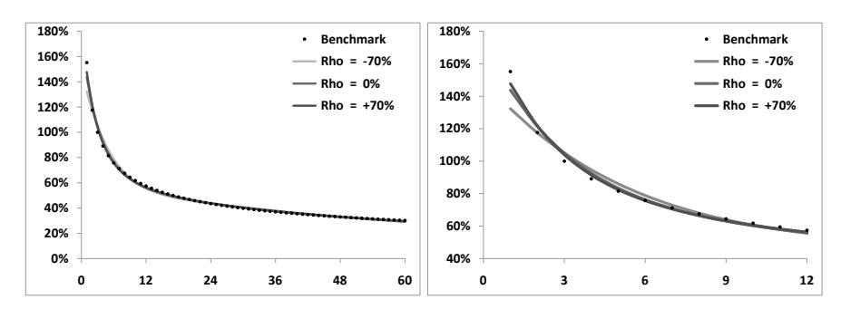
图 7.1： 时 VS 波动率的瞬时 vol of vol 随期限（月）的变化，基准幂律与三组参数的结果。三组参数均能在 1 个月至 5 年内匹配幂律；右图放大 1 年以内区间，拟合质量良好。
表 7.1（三组匹配参数，，）：
| Set I | 150% | 0.312 | 2.63 | 0.42 | −70% |
| Set II | 174% | 0.245 | 5.35 | 0.28 | 0% |
| Set III | 186% | 0.230 | 7.54 | 0.24 | 70% |
两个时间尺度 、 明显分离（Set II 约 0.19 年和 3.6 年），这是拟合宽频幂律的机制。
注释：vol of vol 期限结构的计算方法
图 7.1 中的点状数据来自 Euro Stoxx 50 的历史 VS 波动率时间序列（2005–2010 年），计算步骤如下：
- 对每个到期日 （如 1 月、3 月、6 月、1 年……），收集每日观测的 VS 波动率
- 计算 的滚动标准差（通常 20 日或 60 日窗口），年化后即为该期限的历史实现 vol of vol
- 对不同期限 绘制 ，即得 vol of vol 的期限结构
这个量没有直接的市场报价——Bloomberg/Refinitiv 提供 VS 波动率的历史时间序列，但 vol of vol 期限结构需要自行计算。最接近的可交易约束是方差实现期权（隐含约为历史值的 2 倍，原书取折中值 ）和 VIX 期权（仅覆盖近端 1–6 个月）。这一倍数差异正是方差风险溢价：市场为 vol of vol 风险支付的额外溢价。
4.3 前向方差的波动率与相关性（§7.4.2）
三组参数现货起算 VS 波动率 vol of vol 几乎相同，但对前向方差本身的波动率和相关性有不同预测。
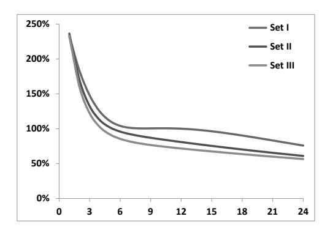
图 7.2：三组参数下前向方差 的瞬时波动率随期限（月）的变化。
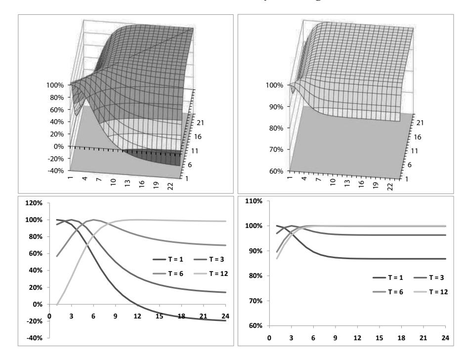
图 7.3：三组参数下 的矩阵图（上）及固定 的切片（下）。
相关性结构唯一的时间尺度是 ；当 时，短因子贡献可忽略，远期前向方差之间相关性趋近 1。这使得三组参数在前向起算 VS 波动率（方差互换期权的标的）上产生明显差异——Set I 约 160%，Set III 约 140%——单因子模型无法实现这一解耦。
三组参数的本质区别与实务选参指南：
Set I（）、Set II（）、Set III（）在现货起算 VS 波动率 vol of vol 上近乎相同，差异体现在前向方差的波动率和相关性上：
-
Set I（）：两个因子负相关，短期因子和长期因子的波动率大，但相互抵消，使得 VS 波动率（作为积分平均）的波动率维持在目标水平。前向方差相关性衰减快，远期前向方差之间相关性低。前向 VS 波动率的 vol of vol 最高（约 160%）。
- 适用场景：产品对方差曲线形变（不同期限段的独立变动）敏感；对前向起算 vol of vol 要求高（如方差互换期权、远期起算方差实现期权）。
-
Set II（）：两个因子独立，是最"中性"的选择。数值性质好，便于调试和诊断。
- 适用场景：对两类前向方差的假设无强烈先验，作为基准参数集。
-
Set III（）：两个因子正相关，远期前向方差之间相关性高（长端几乎 100%）。前向 VS 波动率的 vol of vol 最低（约 140%）。
- 适用场景：产品对方差曲线整体移动（平行移动）更敏感，而非对曲线形变敏感；账簿主要为现货起算产品。
决策树：
产品是否含有前向起算的 vol of vol 风险？
├─ 是（如前向起算方差实现期权、远期方差互换期权）
│ ├─ 要求前向 vol of vol 高 → Set I
│ └─ 要求前向 vol of vol 低 → Set III
└─ 否（如现货起算方差实现期权、普通 cliquet）
→ Set I/II/III 价格几乎相同，任选（通常 Set II）
更深一层的含义：三组参数对方差互换期权（VS swaption， 起算 到期）的定价差异，量化了模型对"方差曲线形变"的不确定性。若市场有方差互换期权的报价，可以用它来区分三组参数——实践中这类工具流动性很低，通常需依赖历史数据对前向方差相关性做判断。
4.4 VS 波动率的微笑（§7.4.3）
图 7.4 展示 3 月起算 3 个月方差互换期权的隐含波动率（以波动率 moneyness 为横轴）：
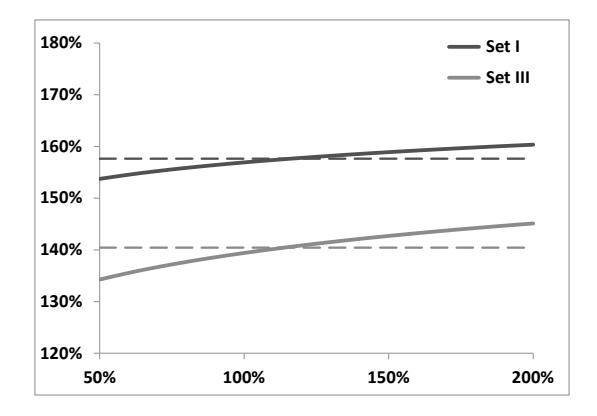
图 7.4：Set I 和 Set III 下方差互换期权的微笑（ 月， 月），虚线为近似 ATM 水平（式 7.41）。微笑弱且正斜率，VS 波动率接近对数正态。
近似 ATM 隐含波动率（式 7.41）：。
4.5 非平坦 VS 期限结构的影响（§7.4.4）
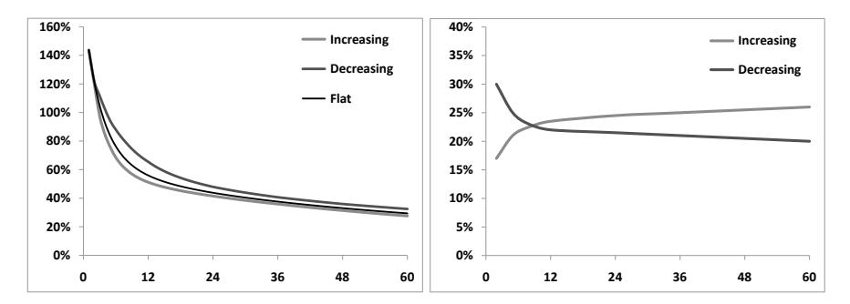
图 7.5：Set II 下三种 VS 期限结构对应的 （左）及对应期限结构（右）。
递减 VS 期限结构（近月 VS 高）对应更大的 vol of vol，因为短期前向方差权重更大且瞬时波动率更高。这与市场经验一致：高波动率时期（通常是递减期限结构）伴随更高的 vol of vol。
5. 校准——香草微笑（§7.5）
研究动机
模型的参数由 vol of vol 和相关性的经济判断决定，不应被动由香草微笑反推。本节厘清输入市场价格（校准到 VS/ATMF 期限结构）和从微笑推断参数的本质区别，为后续实务操作提供原则。
5.1 两类校准的根本区分
校准到 VS/ATMF 波动率期限结构（推荐）：将 设为市场 VS 方差，直接输入标的物的当前价格。这建立了以方差互换（或 ATMF 期权）为对冲工具的框架，carry P&L 具有标准 Gamma/Theta 形式。这"几乎不算校准"——只是录入市场数据。
从整张香草微笑反推模型参数（ 等）：真正的参数校准。但反推出的参数对冲比率可能反映模型特有的结构关系，而非真实可对冲的风险——类似 Heston 中用 同时驱动 vol of vol 和偏斜时所产生的混淆。
正确使用哲学：、、、 通过历史数据或对风险的经济判断设定，不依赖当日香草期权价格； 则每日从市场输入。香草微笑的完整拟合是次要目标，详细分析见第八章，此处仅作简要解释。
上述观点是理解本模型使用逻辑的关键问题：结构参数由历史数据估计而非最小化定价误差，会不会导致模型价格与市场价格严重偏离？
答案分两个层次。
第一层： 的精确匹配保证了对冲工具的零残差
前向方差模型对对冲工具的价格精确匹配，没有误差。校准到 VS 期限结构时，VS 的模型价格与市场价格精确相等（因为 直接等于市场 VS 方差）；校准到 ATMF 期限结构时，各到期日 ATM 期权的模型价格与市场精确匹配。这些对冲工具在账簿中用于管理一阶风险（Vega），精确匹配是合法 carry P&L 形式的必要条件。
第二层：偏离 ATM 的香草期权（偏斜和曲率）会有残差
对于远离平值的香草期权（即微笑的偏斜和曲率部分），模型价格通常与市场价格存在偏差——结构参数 是通过历史数据设定的，不保证能精确复现每日市场微笑的具体形状。
这一残差是有意为之，背后有两个理由：
（1）Bergomi 的核心主张：香草微笑的偏斜形状由市场当日供需决定，不一定反映真实的风险溢价水平。如果用整张微笑反推 （即最小化定价误差），那么每日重校准后 会跟随市场微笑跳变，导致 carry P&L 的 Vanna 盈亏平衡水平随之剧烈变动——账簿的风险假设每天都在改变，这是不可取的。
（2）前向方差模型的定价对象：模型主要用于定价 vol of vol 敏感产品（方差实现期权、雪球、cliquet），这类产品的价格由 和前向偏斜（）决定，而非香草微笑的当日截面形状。对于这类产品，"香草微笑的残差"在很大程度上不影响定价精度——奇异期权的关键参数是结构参数，不是截面拟合误差。
实务处理：残差作为买卖价差的依据
对于确实需要精确匹配香草微笑的场景（如含有强偏斜敏感性的障碍期权），可以在前向方差模型基础上叠加局部波动率修正（第十二章的局部随机波动率模型，LSV），使模型同时精确匹配香草微笑截面和保留对 vol of vol 的独立控制。这也说明了为什么第七章不强求香草微笑的精确拟合——它把这个问题留给了第十二章解决。
一句话概括：前向方差模型精确匹配对冲工具（VS 或 ATMF 期权），对非对冲工具的香草微笑残差是刻意保留的，因为强制消除残差会破坏结构参数的稳定性，而结构参数稳定性正是这个模型相对于 Heston 和局部波动率的核心优势。
对中国市场的参照：A 股期权市场方差互换流动性有限，主要对冲工具仍是 ATMF 期权。将前向方差模型校准到 ATMF 波动率期限结构更为实际；需注意 ATMF 与 VS 波动率之间的凸性修正（偏斜结构决定），对 A 股市场量级约 0.5–1 vol pt。
5.2 三类模型的校准方法对比
| 维度 | 局部波动率 | Heston | 前向方差模型 |
|---|---|---|---|
| 校准输入 | 整张隐含波动率曲面（所有 ） | 整张或部分隐含波动率曲面 | VS/ATMF 期限结构（一维）； 另行设定 |
| 校准输出 | 确定性函数 ，完全由市场决定 | 标量参数 ，最小化残差 | （日更新，直接输入）；结构参数年/季度调整 |
| 校准方式 | 精确匹配（无残差），用 Dupire 公式解析 | 最小二乘拟合（通常有残差） | 期限结构精确匹配；香草微笑可选拟合 |
| 校准速度 | 快速（Dupire 公式直接计算） | 需数值优化（秒级） | 极快（ 直接录入；结构参数不需日更新） |
| 校准的经济含义 | 把所有自由度交给今日市场微笑 | 从微笑反推模型参数（有循环依赖风险） | 明确区分"市场信息"和"主观判断"两类输入 |
| 重校准稳定性 | 每日重校准后 变化，Vanna/Volga 盈亏平衡水平随微笑变化 | 参数每日跳变，盈亏平衡水平不稳定 | 每日更新，结构参数稳定；carry P&L 盈亏平衡水平变化有界 |
校准层次的本质差异：
局部波动率模型没有真正意义上的"结构参数"——校准等于把 Dupire 公式运行一遍，输出一张 的格点数据。模型的所有动态性质（vol of vol、SSR、未来偏斜）均是这张格点数据的函数，无法主动调整。
Heston 模型的校准是参数拟合问题，但参数含义模糊：（vol of vol）同时影响微笑曲率和 vol of vol， 同时影响偏斜斜率和 Vanna 盈亏平衡水平。从微笑反推的参数可能在不同市场状态下大幅跳变，导致 carry P&L 的盈亏平衡水平不稳定。
前向方差模型的校准分两层：第一层是每日从市场录入 ，这一步快速且无歧义；第二层是设定结构参数，这一步基于历史数据和经济判断，更新频率低（月/季）。这种分层校准使得日常风险管理和参数设定在逻辑上分离，账簿的盈亏平衡假设（由结构参数决定）不会因每日市场波动而改变。
5.3 模型是否依赖方差互换报价？
这是一个实务中常见的误解，值得单独澄清。
前向方差模型不强制依赖 VS 场外报价。
有两条来源路径，两者在数学上等价，差异仅体现在对冲工具的选择：
路径一（VS 来源）：直接令 ，使用方差互换作为 Vega 对冲工具。carry P&L 的 Vega 盈亏平衡协方差对应 VS 波动率之间的协方差。
路径二（ATMF 来源）：令 （以 ATMF 隐含波动率的平方近似前向方差），使用 ATMF 期权作为对冲工具。carry P&L 的 Vega 盈亏平衡协方差对应 ATMF 波动率之间的协方差。两者之间的差异由偏斜结构决定——近似误差通常在 0.5–1 vol pt 量级。
Bergomi 原书（§7.5）明确指出：校准到 ATMF 波动率期限结构"leads to a well-defined gamma/theta carry P&L"，与 VS 校准具有同等的数学合法性。
结构参数 的设定完全不依赖 VS 报价，均来自历史数据统计或经济判断。具体地：
（vol of vol 幅度）的估计
从历史 VS 波动率（或 ATMF 波动率）时间序列中，对每个期限 计算 的滚动标准差（年化），得到各期限的历史实现 vol of vol 。Euro Stoxx 50 的实证结果约为 60%（3 个月期）。
由于市场方差实现期权的隐含 vol of vol 约为历史值的两倍（方差风险溢价的体现），Bergomi 取折中基准 （见 §4.2 中的基准幂律参数）。 的取值范围因此由历史下界和隐含上界框定，具体选择反映对 vol of vol 风险溢价的主观判断。
（因子时间尺度与混合参数）的估计
给定上一步确定的 ，对公式 （式 7.24）做非线性最小二乘拟合，使模型 vol of vol 期限结构最优匹配基准幂律 ：
拟合目标（幂律基准）的参数 本身来自对历史 的对数线性回归（即在对数坐标下拟合斜率）。表 7.1 列出了三组等效拟合结果，说明这个最小化问题有多个局部极小（由 的不同取值区分），实务中通过 VIX 期权/VXX 期权等额外约束进一步筛选。
（现货与各 OU 因子的相关系数）的估计
控制 ATMF 偏斜的大小和符号（见第八章的详细推导），其估计通过两步完成：
-
从历史数据计算现货日收益率与各期限 ATM 波动率变化之间的协方差：，这一历史相关系数通常为负（权益市场的杠杆效应，典型值 至 ）。
-
将上述历史相关系数与模型隐含的偏斜（由 通过第八章的近似公式映射到 ATMF 偏斜）对比，选取使模型 ATMF 偏斜水平与历史/市场观测偏斜吻合的 值。
需要指出的是， 的设定也含有主观成分：对于含负 Vanna 敞口的奇异期权（如雪球），可以保守地将 设得偏大（偏斜假设更强），以在 carry P&L 中为 Vanna 风险留出更多缓冲。
5.4 在中国市场的应用
中国 A 股期权市场（沪深 300 ETF、上证 50 ETF、中证 500 ETF 期权）目前没有活跃的方差互换场外报价市场，但前向方差模型仍然可以完整应用，只需将校准来源切换为路径二。
的设定：直接用各月度到期的 ATMF 隐含波动率平方作为输入，对冲工具为 ATMF 期权。近似误差（凸性修正）与偏斜水平成正比：A 股市场偏斜约 – per 10% moneyness，对应 与 的差约 0.3–0.8 个方差点，在大多数定价场景下可接受。若需精确计算，可用公式 （偏斜修正项）。
结构参数的设定参照历史数据：
- （vol of vol 幅度）：沪深 300 ETF 期权 ATM 波动率的历史 vol of vol，近年约 50%–80%（20 日滚动窗口），无公开 VIX 类产品可参照，直接用历史估计
- ：历史 vol of vol 的期限结构，通过拟合不同到期日 ATMF 波动率之间历史相关性确定
- ：通过 ATMF 波动率与现货收益率的历史协方差估计
各类产品的适用性：
| 产品类型 | 是否适用 | 说明 |
|---|---|---|
| 雪球（autocall） | ✅ | 离散前向方差模型（§7.8）完整适用，三向分离有效 |
| Accumulator | ✅ | 同上 |
| Cliquet / 远期起始期权 | ✅ | 前向偏斜由 控制，无需 VS |
| 障碍期权 | ✅ | 连续前向方差模型配合 LSV 使用 |
| 方差实现期权（现货起算） | ⚠️ | SM 框架适用，但 VS 对冲需用 ATMF 期权组合近似；国内此类产品较少 |
| 方差互换期权（VS swaption） | ⚠️ | 需 VS 流动性，国内场外 VS 报价有限，参照价值有限 |
| VIX 类产品 | ❌ | 国内暂无对应的波动率期货，§7.7 内容不直接适用 |
实操建议：对于含雪球和 accumulator 的奇异期权账簿，建议采用离散前向方差模型（§7.8），以月度 ATMF 波动率作为 输入， 和 通过历史数据估计，并对三向风险（vol of vol、前向偏斜、香草微笑）分别设定买卖价差。这一流程不依赖 VS 市场，完全可以在现有 A 股期权市场条件下实施。
6. 方差实现期权（§7.6）
研究动机
§7.1–7.5 建立了前向方差模型的理论框架，并确立了以 VS 方差期限结构为校准输入、以结构参数 为动态设定的两层架构。本节是全章第一个具体应用，用来回答一个关键问题：这个模型对什么样的产品最自然、最有用？
答案是方差实现期权（options on realized variance）。
这类产品的支付直接依赖于标的资产的已实现波动率 ，对 vol of vol 极度敏感——它是"购买或出售 vol of vol 风险"最直接的形式。三类模型在此产品上的处理方式形成了鲜明对比：
局部波动率模型无法为方差实现期权提供有意义的定价——局部波动率的 vol of vol 完全由偏斜锁定，无法独立设定，且 §2.6 已经说明局部波动率模型的未来波动率动态与市场不符（未来偏斜衰减过快），导致 vol of vol 被系统性低估。
Heston 模型虽然有 vol of vol 参数 ，但其 vol of vol 期限结构为单指数形式 （§6.4），与市场幂律不符，且正态波动率（ 与当前 无关）使定价在高/低波动率环境下存在系统性偏差。
前向方差模型则天然适合这类产品：VS 波动率 是模型的直接状态变量，其 vol of vol 期限结构 可以独立于当前微笑设定（由参数 决定），且精确匹配幂律行为。已实现方差 是 的终值，两者的关系清晰——前者是已发生的 ，后者是对未来的预期 。
核心技术挑战在于：已实现方差 本身不可对冲——它是历史路径的函数，没有任何到期支付精确等于 的可交易工具。本节的核心贡献是构造一个可以精确对冲的替代标的 ，证明它是鞅，并由此推导出简洁的近似定价与 VS 对冲框架（简单模型，SM）。这套框架揭示了：方差实现期权的定价归结为 在 上的 vol of vol 积分，VS 对冲天然是合适的工具，且在 SM 近似下 Vega 对冲与 Gamma 对冲合二为一——这些结论在局部波动率和 Heston 框架下均无法以如此简洁的形式呈现。
6.1 产品定义
ATM 方差实现看涨期权的支付（标准市场惯例）：
其中 为行权价（波动率）， 为 VS 波动率，归一化使 ATM 期权支付近似为 。
6.2 可对冲的标的 （§7.6.1）
核心构造：虽然 不可对冲，以下组合可以精确对冲：
为什么可以对冲？ 对式（7.42）的分析表明：在 上持有 份到期日 的方差互换，产生的 P&L 恰好为 。前向方差无漂移，故 也是鞅，定价漂移为零。
初末值：，（即已实现方差）。因此期权支付 ， 是期权的真正标的物。
用前向方差表达：（式 7.44），即过去已实现方差加上未来隐含方差的时间加权平均。
6.3 简单模型（SM）（§7.6.1–6.2）
设 对数正态，瞬时 vol of vol 为确定性函数 ， 的 SDE（仅保留扩散项）：
是两个积分方差之比，量级为 1。SM 近似：令 （定价日的值），则 变为对数正态，期权价格为 BS 公式：
经济直觉：权重 在 时最大（1），在 时消失。越接近到期， 已被部分"锁定"为已实现方差，剩余不确定性减少。期权价格主要由早期（）的 vol of vol 决定，这与直觉一致：vol of vol 影响 VS 波动率是否能"超出"行权价，而这主要在早期决定。
对幂律基准 ，解析公式为：
当 时 为常数，期权价格几乎不随期限变化——与表 7.2 数值结果一致。
表 7.2（ATM 方差实现看涨期权价格，平坦 VS 20%，市场惯例归一化）：
| Set I | Set II | Set III | 基准 | |
|---|---|---|---|---|
| 6 个月（精确） | 2.97% | 2.96% | 2.94% | — |
| 6 个月（SM） | 2.93% | 2.88% | 2.86% | 2.82% |
| 1 年（精确） | 3.13% | 3.08% | 3.06% | — |
| 1 年（SM） | 3.02% | 2.99% | 2.98% | 3.01% |
SM 近似与 Monte Carlo 精确值误差不超过 0.15%，三组参数结果几乎相同——确认方差实现期权的主要风险是 的已实现 vol of vol，与前向方差的具体相关结构无关。
6.4 考虑 VS 期限结构的修正（§7.6.4）
对一般非平坦 VS 期限结构，令 ，得修正的有效波动率：
现在依赖中间期限的 VS 波动率 ，需要对中间期限的 VS 进行 Vega 对冲。
6.5 VS 对冲策略：Vega 即 Gamma（§7.6.5–6.6）
中间期限 VS 的连续 Vega 密度（式 7.58）：
密度为负（中间期限 VS 做空），到期 VS 做多。
关键等式（式 7.60）：对平坦 VS 期限结构，——中间期限 VS 的 Vega 汇总为零，总 Vega 等于到期 VS 的 Vega（Delta 对冲 的仓位）。
Vega 即 Gamma：SM 中，对冲 对 VS 期限结构依赖性的 VS 仓位，同时也精确对冲了已实现方差的 Gamma 暴露。方差实现期权的 Vega 对冲与 Gamma 对冲合二为一——这是 SM 框架最优雅的性质，简化了实务风险管理。
表 7.3 给出了幂律基准下 1 年期 ATM 期权的具体对冲：到期 VS 仓位 87.7%，中间期限为负（ 至 ），汇总 Vega 65.1%，汇总 dollar gamma 182%（与模型独立的公式 7.63 给出的 175% 接近）。
6.6 离散收益的修正（§7.6.8）
实际上日收益是离散的，估计量 本身有内在方差（即使在常数波动率 BS 世界中 ATM 方差期权也不为零）。修正的有效波动率（式 7.70）：
其中 （日收益个数）， 为条件超额峰度（典型取 ）。第二项对短期期权（ 个月）不可忽略。
图 7.7 确认 SM（）与双因子 MC 精确价格吻合良好：
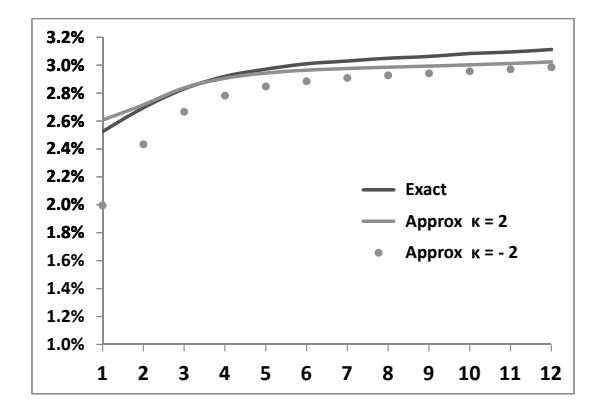
图 7.7：ATM 方差实现看涨期权价格随期限（1 月至 1 年），MC 精确值与 SM 近似（ 和 ）对比。 版本与精确结果高度吻合； 低估了短期期权价格。
6.7 前向起算方差实现期权（§7.6.11）
前向起算（ 起算至 ）方差实现期权价格 = 在 时以当时 VS 期限结构定价的现货起算期权价值的期望，等价于一种特殊的**方差互换期权（VS swaption）**加上额外的时间价值。
表 7.6 关键数据：3 组参数现货起算期权价格几乎相同（~2.95%），但 6 月起算 6 个月期权 Set I（4.25%）显著高于 Set III（3.94%）——差异体现了三组参数对前向方差波动率的不同假设。这是双因子模型解耦现货/前向起算 vol of vol 的直接体现。
近似的误差来源与边界分析
SM 的核心近似是 ，这里有必要分析它在什么情况下成立，什么情况下会失效。
近似成立的条件：，其中分子是 时刻对残余期限 的预期方差，分母是包含已实现方差 的复合量。只要：
- VS 期限结构接近平坦（，即 VS 曲线不大幅移动）
- 已实现方差与预期方差差异不大（）
则 （平坦期限结构情况）或 （一般情况）。
近似失效的场景：若实现波动率系统性地低于隐含 VS 波动率（股票指数的历史常态），则 ，导致 持续。此时 的实际波动率高于定价时使用的 ，已卖出的方差实现看涨期权将系统性亏损——每日 Gamma/Theta P&L 为负，因为实现的 比定价时假设的大。
实务含义：即使 的实现 vol of vol 精确等于定价时的 ，若实现波动率持续低于隐含水平，卖出方差实现期权的交易台仍会亏损。这一风险无法通过 VS 对冲消除——它是"方差风险溢价"（variance risk premium）的体现，是方差实现期权相对于 VS 的额外成本来源。Bergomi 指出，为应对这一风险，应在 上保留一定的安全边际（例如乘以 而非假设 ），特别是在 VS 波动率期限结构倒挂（近月高于远月）的高波动率环境下， 可能持续偏离 1 达数月之久。
7. VIX 期货与期权（§7.7）
研究动机
§7.6 以方差实现期权为第一个应用，说明 VS 波动率的 vol of vol 是该产品的核心定价输入。然而，VS 波动率的 vol of vol（参数 ）是通过历史数据或保守判断设定的——前向方差模型目前还没有直接来自市场的约束。
VIX 期货填补了这一空白。VIX 期货的结算价是 S&P 500 未来 30 日 VS 波动率，直接对应前向方差的区间积分（式 7.85）：前向方差 是模型的状态变量，VIX 期货就是这个状态变量在 30 日区间上的可交易版本。因此 VIX 产品的出现不是偶然的——它是前向方差这一状态变量在市场上最接近的可观测物。
这带来两个具体任务。第一，基础版本假设 对数正态，对应 VIX 期货微笑平坦；市场 VIX 期权实际上有正斜率的陡峭微笑（图 7.8），需要扩展 Markov-functional 结构（§7.7.1 两指数叠加）。第二，VIX 期货和 VXX 期权提供了区分三组等效参数集（Set I/II/III）所需的独立约束：三组参数在现货起算 VS 波动率上几乎相同，但对 VIX 期货 vol of vol 的期限分布（ 的选取）有不同预测，后者可从 VXX 期权数据中读出（图 7.13）。
7.1 VIX 期货的基本结构（§7.7.1 前置）
VIX 期货到期日 的结算价 是 S&P 500 指数 （ 天）区间的 30 日对数合约隐含波动率，通过香草期权组合复制（式 7.83）。模型中，VIX 期货的前向方差定义为：
VIX 期货本身（作为可交易工具）是鞅：（式 7.86）。
图 7.8 展示 2011 年 6 月市场上 5 个 VIX 期货及其期权微笑：
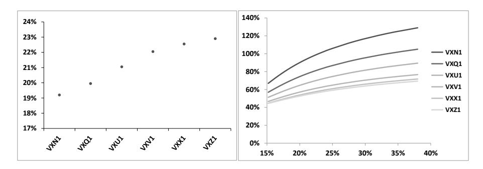
图 7.8：左图：2011 年 6 月 14 日 5 个 VIX 期货（7 月至 12 月到期）价格，呈正斜率期限结构。右图：各到期日 VIX 期权的隐含波动率微笑，正斜率且较陡。对数正态前向方差（无微笑扩展）无法拟合这一陡峭微笑，需要引入 §7.7.1 中的扩展参数化。
7.2 扩展前向方差的马尔可夫泛函模型（§7.7.1）
基础模型（对数正态）的 中，映射函数 为纯指数——对应无微笑结构。
推广：允许 取一般形式，只需满足鞅条件对应的 PDE（式 7.87）：
两指数叠加参数化（式 7.89）：
其中 （混合参数），（决定两个指数的相对尺度），（通过式 7.90 调节整体 vol of vol 幅度）。
- 或 1：退化为对数正态（无微笑）
- ：退化为位移对数正态
- 、 联合控制微笑的斜率和曲率
该参数化产生正斜率微笑（与 VIX 市场观察一致）。对于每个 VIX 期货到期日 ，用 独立校准对应的 VIX 期权微笑。
图 7.9 展示 2011 年 6 月校准得到的参数值：
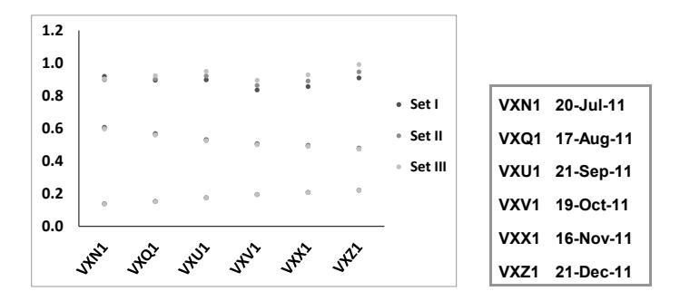
图 7.9：左图：校准到 VIX 市场微笑的 参数（三组参数集的结果几乎相同）；右图：对应的 VIX 期货到期日。
三组参数（Set I、II、III）的 几乎相同，仅 在 Set III 略大——Set III 前向方差波动率较低，需要 补偿，保持总体 vol of vol 一致。
7.3 VIX ETF/ETN 期权（§7.7.3）
VXX 等 ETN 维持第一近月和次近月 VIX 期货的滚动头寸（式 7.94），其价格：
VXX 期权的隐含波动率依赖：（a）各 VIX 期货 vol of vol 的期限分布（高 将波动率集中在到期前，此时期货权重 ；低 将波动率均匀分布，导致 VXX 隐含波动率过低）；（b）期货间相关性（影响较小，约 3.5% / 20pp 相关性）。
图 7.13 显示 –3 最能匹配市场 VXX 微笑，这为选取参数集 提供了额外约束——VXX 期权不是冗余信息，它补充了 VIX 期权无法约束的 VIX 期货 vol of vol 期限分布信息。
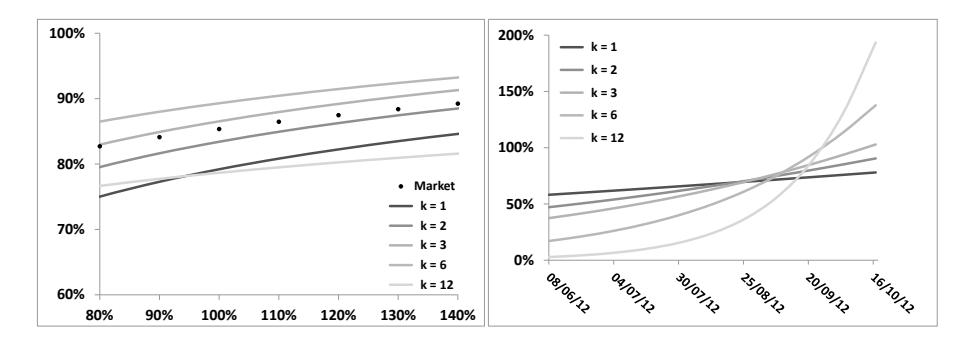
图 7.13：左图：不同 下模型生成的 VXX 微笑（2012 年 12 月到期）与市场对比；右图：VXV2 期货的瞬时波动率 随时间的变化。–3 最优。
7.4 S&P 500 与 VIX 微笑的一致性（§7.7.4）
VIX 期货和期权价格隐含了 S&P 500 指数 的前向 VS 方差（式 7.98）：
这提供了跨市场套利检验：将（7.98）从 VIX 市场推算出的 VS 方差与 S&P 500 VS 市场直接报价对比（图 7.14）。若两者不一致，可以构建套利组合（卖出 VIX 合约 + 买入 S&P 500 前向 VS），但实际操作存在流动性、到期日不对齐等障碍。
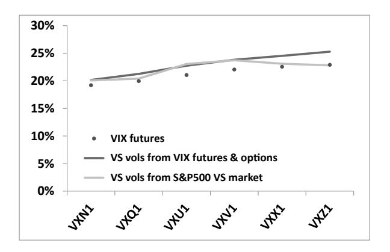
图 7.14：VIX 期货价格、由（7.98）从 VIX 市场推算的 VS 波动率、以及 S&P 500 VS 市场直接报价的对比（2011 年 1 月 14 日）。VIX 合成的 VS 波动率通常高于 S&P 500 VS 市场，差异约 1–2 vol pts（套利机会历史上存在，但近年已基本消失）。
7.5 VIX 期货相关性结构（§7.7.5）
双因子模型中 VIX 期货相关性结构只有一个时间尺度 ，导致远期期货之间相关性偏高（图 7.15），与历史数据存在系统性偏差。引入第三因子可以改善相关性结构的灵活性，但同时增加参数维度。
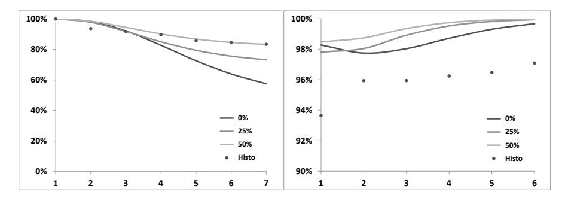
图 7.15：左图： 随 的变化（模型三组 值 vs. 历史点）；右图：相邻期货相关性 。 能较好匹配第一期货与其他期货的相关性，但相邻期货相关性系统性偏高。
8. 离散前向方差模型（§7.8）
研究动机
连续前向方差模型中，参数 和 同时影响香草微笑、前向偏斜、vol of vol 三个维度，无法独立控制——改变 调整偏斜的同时，必然改变 盈亏平衡协方差，进而改变 carry P&L 的 Vanna 项盈亏平衡水平。这种耦合使得奇异期权的 bid/offer 价差设定缺乏清晰的风险归因：究竟是在给前向偏斜不确定性定价，还是在给 vol of vol 不确定性定价，连续模型无法区分。
离散前向方差模型通过绑定特定时间表，将三类风险在参数层面解耦。
8.1 模型两层结构
时间表 ，分两步构建：
第一步：各区间离散前向方差 （代表 的方差）的动态：
全局统一， 对每个区间独立。解析解：（式 7.100）。
第二步：区间 内现货动态的指定，含区间独立的相关系数 。
8.2 连续与离散的对接
对比式（7.101a）（离散）和（7.101b）（连续）：唯一差异在于连续模型中系数 随时间和方差曲线形状变化，而离散模型将其固化为 。当 VS 期限结构平坦时，两者完全一致。
从连续到离散的映射：设各区间 等于连续模型在 时的 ，则两个模型对初始前向 VS 波动率的 vol of vol 一致。这允许"宏观参数用连续模型校准，各区间细节在离散模型中独立调整"的分层工作流。
8.3 三向分离的完整机制
vol of vol 独立控制（参数 ）：改变 只改变 的分布宽度，不影响其他区间的 ，也不影响香草微笑形状（仅改变 VS 期权定价）。这使得可以对每个月份区间单独设定"这段时间内波动率会波动多大"的假设，对应 bid/offer 中的 vol of vol 风险溢价。
前向偏斜独立控制（参数 ）： 控制区间 内现货与方差的相关性，决定该区间的前向 ATMF 偏斜。关键在于，改变单一区间 的 ，若同时用局部波动率成分精确维持当前截面香草微笑不变，则两者可以解耦——这正是第十二章局部随机波动率模型（local-stochastic volatility，LSV）的核心操作。
为什么连续模型无法做到这一点：在连续模型中， 通过 影响所有到期日的偏斜——调整一个相关系数参数会同时改变所有期限的香草偏斜和所有时间点的前向偏斜，无法单独调整某段期间的前向偏斜。离散模型中， 被限制在区间 内，配合 LSV 使香草微笑约束在各区间边界处被精确满足。
香草微笑的独立约束（区间内局部波动率）：各到期日 的香草微笑通过区间内局部波动率函数 独立校准（LSV 乘积形式），与 和 解耦。
三向分离汇总：
| 风险 | 控制参数 | 影响范围 | 对冲工具 |
|---|---|---|---|
| 香草微笑（当前截面） | 到期隐含波动率 | 香草期权 | |
| 前向偏斜（区间斜率） | 前向 ATMF 偏斜 | 前向起算期权（若可交易） | |
| vol of vol（区间幅度） | 方差分布宽度 | VS 或 VS swaption |
8.4 实务应用：雪球定价的三向压力测试
以挂钩沪深 300 ETF 的 1 年期雪球（月度观察，敲出 103%，敲入 80%，12 个月度区间）为例，三向分离的具体操作：
基准定价： 从市场 VS 直接输入，（基于历史估计），（基于历史前向偏斜），LSV 保证香草微笑精确。
三向压力测试（各项独立变动）：
| 压力场景 | 改变参数 | 价格影响方向 | 对应风险敞口 |
|---|---|---|---|
| vol of vol 上升 20%（） | 提前敲出不确定性增加 → 价格↓ | vol of vol 风险 | |
| 前向偏斜消失（） | 下行路径中波动率不再上升 → 敲入概率↓ → 价格↑ | 前向偏斜风险 | |
| 整体偏斜加深（香草微笑斜率 /10%） | 虚值保护收益上升 → 价格↑ | 当前截面偏斜风险 |
三向测试在连续模型中无法独立执行——调整 同时改变香草微笑和前向偏斜，导致两种风险混淆定价。这是离散模型相比连续模型最直接的实务优越性。
对中国市场的参照：国内雪球敲出/敲入障碍对前向偏斜极度敏感，而 A 股期权市场目前缺乏独立的前向偏斜对冲工具，风险须在定价中予以体现。通过三向分离，可以明确量化"前向偏斜不确定性"所对应的 bid/offer 宽度，使风险溢价的定价更加透明可辩护，而非隐含在整体参数调整中。尚无公开的 A 股前向偏斜历史数据库，可通过历史 ATMF 波动率对不同起始日的月度收益进行统计估计。
8.5 VIX 期货的直接建模（§7.8.2）
离散模型中可直接对 VIX 期货 建模，而非先建连续前向方差 再导出。对依赖日内 路径的产品（如 VXX 期权、VIX ETN 期权）更直接，可对 VIX 期货直接施加两指数叠加参数化微笑（类似 §7.7.1），无需底层连续模型。
➊ 定价方程：前向方差模型以 为状态变量，carry P&L 有三类 Gamma/Theta 对（现货、方差/方差、现货/方差），盈亏平衡水平分别为 、、，均不依赖支付函数——模型是合法的市场模型。
➋ 马尔可夫表示：指数衰减 vol of vol 是前向方差存在有限维马尔可夫表示的充要条件。 个指数叠加对应 个 OU 过程，可精确模拟。
➌ 双因子模型：两个时间尺度 、 分离使模型能在 1 月–5 年范围内匹配幂律型 vol of vol 期限结构。三组等效参数集在现货起算 VS 波动率上几乎相同，但在前向起算 VS 波动率上有显著差异——后者是产品选参的判断依据。
➍ 方差实现期权（SM）：可对冲标的为 ，价格由单一输入 决定，有效波动率 ，Vega 对冲与 Gamma 对冲合一。
➎ VIX 微笑扩展：两指数叠加映射函数 在保持马尔可夫结构的前提下引入正斜率微笑，可精确校准 VIX 期权。VXX 期权提供了独立约束 vol of vol 期限分布的信息。
➏ 离散前向方差模型：通过绑定时间表，实现香草微笑、前向偏斜、vol of vol 的三向独立参数化，是管理含 cliquet、雪球等复杂路径依赖期权账簿的核心工具。
9. 端到端工作流算例
以一个典型的**12 个月 accumulator（累计期权）**为主线，贯穿本章核心公式。产品每月观察一次，共 12 个观察日，支付 ，其中 ，cap = 3%。基础数据：，，平坦 VS 波动率 20%，偏斜期限结构近似幂律指数 0.4。
步骤 1：校准 VS 波动率期限结构
做什么：从市场获取各月度到期的 VS 波动率（或 ATMF 隐含波动率），设定 。
本章对应：§7.1（定价方程）、§7.5（§5.3，两条校准路径）。
核心公式：
- VS 来源（有方差互换报价）：，直接录入
- ATMF 来源（无 VS 报价，如 A 股市场）：，误差约 0.5–1 vol pt（凸性修正项 ，可选加）
两条路径数学上等价，差异仅体现在对冲工具（VS vs. ATMF 期权）的选择。
算例数据（平坦曲线，12 个月度节点，以 ATMF 来源为例）：
假设沪深 300 ETF 期权各月度 ATMF 隐含波动率均为 20.0%，偏斜约 per 10% moneyness（）。
| 到期 （月） | 凸性修正 | （修正后） | |
|---|---|---|---|
| 1 | 20.0% | ||
| 3 | 20.0% | ||
| 6 | 20.0% | ||
| 12 | 20.0% |
（若忽略凸性修正，直接取 ，即与原算例数据一致——误差在此偏斜水平下约 1–3 vol pt，大多数粗定价场景可接受。）
工作流后续步骤沿用原算例数据（，平坦曲线），等价于忽略凸性修正的 ATMF 来源校准。
关键观察：无论哪条路径， 的设定都只是录入当日市场数据，无需任何结构参数——与步骤 2 的参数设定完全解耦。
步骤 2：设定双因子模型参数
做什么：根据历史 vol of vol 和对前向偏斜的经济判断，设定 。
本章对应：§7.4（双因子 vol of vol 期限结构）、§7.5（参数设定原则）。
核心公式（平坦 VS 时，式 7.24）：
取 Set II 参数（，，，，），此时 。
验算几个到期日的 vol of vol（利用 ）：
| （年） | （近似） | ||
|---|---|---|---|
| 0.25（3月） | |||
| 1.0（1年） | |||
| 3.0（3年） |
与基准幂律 对比：3 月 = 100%，1 年 = 63%，3 年 = 43%——双因子近似匹配，短端略低是已知偏差（图 7.1 右图）。
现货/波动率相关性设定（影响 ATMF 偏斜，见第八章）：取 ，，对应 1 年期 ATMF 偏斜约 per 10% moneyness。
步骤 3：计算 vol of vol 期限结构与前向 VS 波动率
做什么：确认模型的 vol of vol 期限结构，并计算各区间的前向 VS 波动率（用于后续产品定价和风险分析）。
本章对应：§7.4.1（式 7.24）、§7.4.2（式 7.26 前向 VS 波动率的 vol of vol）。
前向 VS 波动率的 vol of vol（式 7.26，平坦 VS 期限结构下）：
月度前向（， 从 0 递增到 11 个月）：
| （月） | （衰减因子） | （近似，以 Set II） |
|---|---|---|
| 0 | 1.000 | |
| 3 | ||
| 6 | ||
| 11 |
关键观察：近月的前向 VS 波动率 vol of vol（130%）远高于远月（20%），说明累计期权中早期月份的收益波动性不确定性远大于后期，早期路径对定价的影响更大。
步骤 4：定价 accumulator
做什么：在双因子模型下通过 Monte Carlo 模拟为 accumulator 定价，展示前向偏斜对价格的敏感性。
本章对应：§7.4（双因子 MC 模拟）、§7.8（离散模型的三向分离）。
MC 模拟框架：
- 精确生成 （式 7.15–7.17），无时间步进误差
- 在每个月度区间 内，以 为瞬时方差驱动现货动态
- 计算月度收益 ，截断于 cap=3%，累计
前向偏斜对价格的定性影响（以离散模型三向分离分析）：
| 假设场景 | （所有月份） | 价格变化（相对基准） | 原因 |
|---|---|---|---|
| 基准（） | — | 0 | 基准 |
| 前向偏斜为零 | – | 负偏斜意味着下跌时波动率上升，cap 被触达概率降低；零相关则无此效应 | |
| 前向偏斜加倍 | – | 更强的负偏斜进一步压低正收益概率 | |
| vol of vol 翻倍（） | — | – | 更大的波动率不确定性增加了未来月份收益超过 cap 的可能性 |
数值算例（基准情景）：取单次路径，月度 （平坦曲线），月度收益标准差 ，每月超出 cap 的概率 ，每月期望截断收益约 ，12 个月期望累计约 ，当前价值 （单位：合约面值百分比）。实际 MC 价格需考虑波动率的随机性及相关结构，约在此数量级。
关键观察：accumulator 的价格对前向偏斜（）敏感——这是无法通过观察当前香草微笑直接读出的风险，需要利用离散模型的三向分离能力独立评估。
步骤 5：方差实现期权子账簿的对冲
做什么：账簿中若含有 1 年期 ATM 方差实现看涨期权，利用 SM 计算对冲策略。
本章对应：§7.6（SM，式 7.50–7.58）。
核心公式：
代入 Set II 的 （以幂律近似）：
1 年期 ATM 期权价格（VS 波动率 20%，，）：
（，，，；实际使用式 7.50a 精确计算约 3.1%，与表 7.2 Set II 数据一致。）
VS 对冲：主要对冲为 份到期 VS（约 65%）；额外中间期限 VS 负 Vega（约 至 每月），汇总 Vega 净为零（式 7.60），Vega 对冲即 Gamma 对冲。
步骤 6：风险归因与参数敏感性
做什么：对 accumulator 和方差实现期权的风险来源进行归因，建立参数调整决策框架。
本章对应：§7.4.5（参数选取原则）、§7.8（三向分离）。
| 风险来源 | 影响的产品 | 对应参数 | 监控指标 |
|---|---|---|---|
| VS 波动率期限结构（水平） | 所有产品 | （每日从市场更新） | VS 报价变动 |
| 现货起算 vol of vol | 方差实现期权（现货） | （全局幅度） | 历史 vol of vol 滚动估计 |
| 前向起算 vol of vol | 方差实现期权（前向）、accumulator | 参数集 Set I/II/III 的选择 | VS swaption 报价（若有） |
| 前向偏斜 | accumulator、cliquet | （各区间独立） | 历史前向微笑数据（或 cliquet 报价） |
| 现货 Gamma/Theta | 所有产品 | （瞬时 VS 方差） | 日内现货波动 vs. 隐含 |
参数调整优先级： 每日更新； 按月检查历史 vol of vol； 按季度检查前向偏斜历史数据；Set I/II/III 的选择在产品入账时一次性确定，基于该产品对前向 vol of vol 的敏感性（方差期权前向起算→偏好 Set I；纯现货起算→Set II/III 均可）。
本章工作流与第二章局部波动率工作流的对比
两章工作流选取的产品不同（第二章用上敲出障碍看涨期权，本章用 accumulator 和方差实现期权），但差异更本质地体现在模型使用方式上，具体对比如下：
| 工作流环节 | 局部波动率工作流（第2章） | 前向方差模型工作流（本章） |
|---|---|---|
| 状态变量 | ，标量 | ，含整条方差曲线 |
| 校准输入 | 整张隐含波动率曲面（所有 ） | VS/ATMF 期限结构（一维）+ 结构参数另行设定 |
| 校准输出 | 确定性函数 （每日重校准） | （每日更新）+ 稳定的结构参数 |
| vol of vol 如何进入定价 | 由偏斜期限结构锁定，无独立控制 | 由 直接控制，独立于校准 |
| 对冲工具 | 现货（Delta）+ 香草期权（bucket Vega） | 现货（Delta）+ 方差互换/香草期权（Vega） |
| Vega 对冲的维度 | 离散格点 上的 bucket vega | 连续期限结构 （实践中离散到期节点） |
| carry P&L 的盈亏平衡水平 | （随日常重校准变化） | （由结构参数决定，稳定） |
| 前向偏斜的处理方式 | 由 内生决定，不可独立调整 | 通过 设定，可在一定范围内独立于当前微笑 |
| 典型产品 | 障碍期权、数字期权（路径依赖+偏斜敏感） | cliquet、accumulator、方差实现期权（vol of vol 敏感） |
| 模型局限的体现 | 未来偏斜过快衰减；vol of vol 盈亏平衡水平随微笑跳变 | 三组参数集无法独立约束；前向方差相关性结构需第三因子 |
最核心的一个区别：局部波动率工作流的第一步（曲面构建+Dupire 校准）已经完全确定了模型的所有动态假设——之后没有任何可调整的参数。前向方差模型工作流把期限结构输入（步骤 1）和动态参数设定（步骤 2）分开，交易员在录入市场数据之后仍然有主观判断的空间：vol of vol 定多高、前向偏斜用什么相关系数、选哪组参数集——这些都是局部波动率模型无从回答的问题。
工作流的另一个实质差异是风险归因的粒度。局部波动率工作流（步骤 5）将 carry P&L 分解为 Gamma、Vanna、Volga 三项，每项的盈亏平衡水平均由当日校准的微笑决定，次日微笑变化就会改变盈亏平衡水平。前向方差模型工作流的风险归因（步骤 6）是三向分离框架：vol of vol 风险（由 决定）、前向偏斜风险（由 决定）、香草微笑风险（由 决定）三者的盈亏平衡水平分别稳定，可以单独监控和管理。
工作流总结表
| 步骤 | 关键计算 | 本算例关键发现 | 模型表现 |
|---|---|---|---|
| 1. VS 期限结构校准 | 输入 | 平坦 20% 曲线，直接录入 | ✅ 精确匹配任意形状 |
| 2. 参数设定 | 拟合幂律 | Set II 在 0.25–5 年匹配良好 | ✅ 两因子足够 |
| 3. 前向 VS vol of vol | 式 7.26，月度衰减 | 近月（0月）130%，11月后20% | ⚠️ 参数集选择影响前向定价 |
| 4. Accumulator 定价 | 双因子 MC 模拟 | 对前向偏斜敏感；离散模型可独立控制 | ✅ 三向分离解耦风险 |
| 5. 方差实现期权 SM | 式 7.50， | 价格约 3.1%，Vega=Gamma 对冲 | ✅ SM 近似误差<0.15% |
| 6. 风险归因 | 三向分离框架 | 日更新， 季检 | ✅ 风险敞口透明化 |
附：关键公式索引
| 编号 | 内容 | 核心作用 |
|---|---|---|
| (7.1) | 完整 P&L 展开（含 和 的二阶项） | 定价方程推导基础 |
| (7.2a/b) | 现货/方差协方差 、方差/方差协方差 的定义 | 盈亏平衡水平的规范化 |
| (7.4) | 前向方差模型定价方程（functional PDE） | 模型定价的核心方程 |
| (7.7) | 前向方差的对数正态 SDE（时间齐次） | 模型基本动态假设 |
| (7.9) | 指数衰减 vol of vol | 马尔可夫表示的充要条件 |
| (7.11) | N 因子模型 SDE | 多因子推广 |
| (7.15–7.18) | OU 过程的精确递推（，协方差公式） | 精确模拟的数值方法 |
| (7.24–7.25) | 平坦 VS 时 的解析公式（含 ） | vol of vol 期限结构的分析工具 |
| (7.26) | 前向 VS 波动率的 vol of vol | 区分现货/前向起算的核心公式 |
| (7.28–7.35) | 双因子模型 SDE 及解析解 | 双因子模型的完整表达 |
| (7.40) | 幂律基准 | 参数拟合的目标函数 |
| (7.43) | 可对冲标的 | 方差实现期权定价的核心构造 |
| (7.46–7.47) | 的 SDE 与 的定义 | SM 推导的出发点 |
| (7.50a/b) | SM 定价公式与 | 方差实现期权的实用定价公式 |
| (7.53) | 幂律基准下的解析 | 快速估算期权价格 |
| (7.56a/b) | 考虑 VS 期限结构的修正 | 完整 VS 对冲框架 |
| (7.58) | 中间期限 VS 对冲密度 | VS Vega 对冲计算 |
| (7.60) | 平坦 VS 时 | Vega=Gamma 对冲的等价性 |
| (7.63) | 方差实现期权 dollar gamma | 模型独立的 Gamma 计算 |
| (7.70) | 含离散收益峰度修正的 | 短期期权定价修正 |
| (7.85) | VIX 期货前向方差定义 | VIX 应用的基础 |
| (7.87) | 鞅性条件 PDE（映射函数 的约束） | VIX 微笑扩展的理论基础 |
| (7.89) | 两指数叠加参数化 | VIX 微笑的实用参数化 |
| (7.98) | VIX-S&P 500 一致性条件 | 跨市场套利分析工具 |
| (7.99) | 离散前向方差模型 SDE | 三向分离的模型基础 |